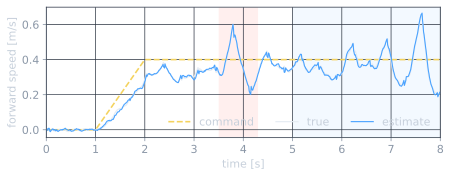
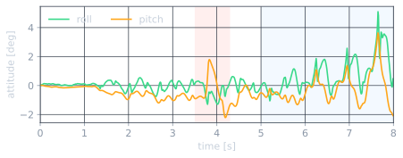
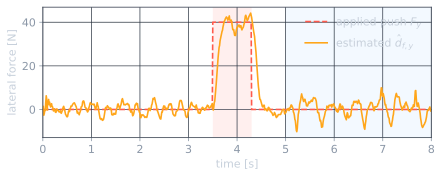
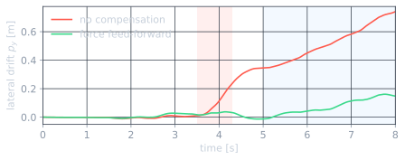
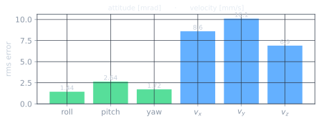
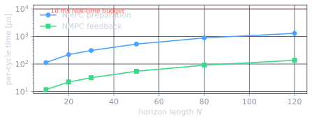

Output-feedback trotting of a 45 kg quadruped in MuJoCo, where a nonlinear model predictive controller and a nonlinear moving-horizon estimator share one reduced-order model, one symbolic source and one design language. The estimator reconstructs the base state and an external disturbance wrench from proprioception alone; the controller plans ground reaction forces inside friction cones at 100 Hz and feeds the disturbance forward.
Closed-loop run at 1080p: stand → trot at 0.4 m/s → 40 N lateral push (red arrow, estimated live in orange) → 0.3 rad/s turn. Green arrows are the commanded ground reaction forces. No ground-truth state anywhere in the loop.
The single-rigid-body dynamics are written once, symbolically, and instantiated as both the controller and the estimator. The controller decides ground reaction forces over half a second of gait; the estimator reconstructs what the controller needs to know — the base state and the disturbances acting on it — from the sensors a real quadruped actually has.
50-stage horizon (0.5 s), 100 Hz. Chooses four 3-D contact forces subject to friction pyramids, normal-force limits and attitude bounds, with the gait-scheduled contact sequence baked into the prediction. Feeds the estimated disturbance force forward.
20-node window (0.2 s), 100 Hz. Fuses IMU attitude, gyro, and leg odometry from the settled stance feet, with the base state augmented by a 6-D disturbance wrench so the push is observable and can be fed forward.
Every 10 ms the estimator turns the sensors into a state and a disturbance estimate; the planner turns that into references, per-stage parameters and swing targets; the controller returns the ground reaction forces; a 500 Hz leg controller maps them to joint torques.
Dynamics, Jacobians, constraints and outputs are emitted once from a SymPy source with common-subexpression elimination, then compiled into both the controller and the estimator — they agree bitwise for identical inputs.
One Newton-type iteration per sample, split into a preparation phase that runs before the measurement and a feedback phase that applies within microseconds of it — the controller's first force lands 0.11 µs after the estimate.
The estimated force is fed to the controller; the estimated torque (swing-leg reaction at gait frequency) is deliberately not — the ablation shows why.
All plots are from a single 8-second run with sensor noise and no ground-truth feedback. Shaded bands mark the 40 N lateral push (red) and the turn (blue).






| Quantity | Result | Condition |
|---|---|---|
| Attitude estimation error (roll/pitch/yaw) | 1.4 / 2.6 / 1.7 mrad | rms, walking phase |
| Velocity estimation error | 9 / 10 / 7 mm/s | proprioception only |
| Base height regulation | 0.452 ± 0.002 m | 0.45 m commanded |
| Roll / pitch excursion | ≤ 0.089 / 0.063 rad | whole run |
| 40 N push — estimate & drift | 39.5 N · 0.15 m | vs 0.74 m uncompensated |
| Controller cycle (N=50) | 0.56 ms + 56 µs | prep + feedback, 100 Hz |
| Estimator cycle (M=20) | 0.24 ms + 37 µs | 1.1 µs instantaneous output |
| Robustness | 5 / 5 seeds · to 2× noise | full scenario, no fall |
15-page write-up: full model derivation, the output-feedback architecture, verification, and every closed-loop result.
Model generator, plant, gait planner, closed loop, experiments and figures — Python, C and SymPy — with the documented solver interface.
The full closed-loop run at 1080p, with live force and disturbance overlays.